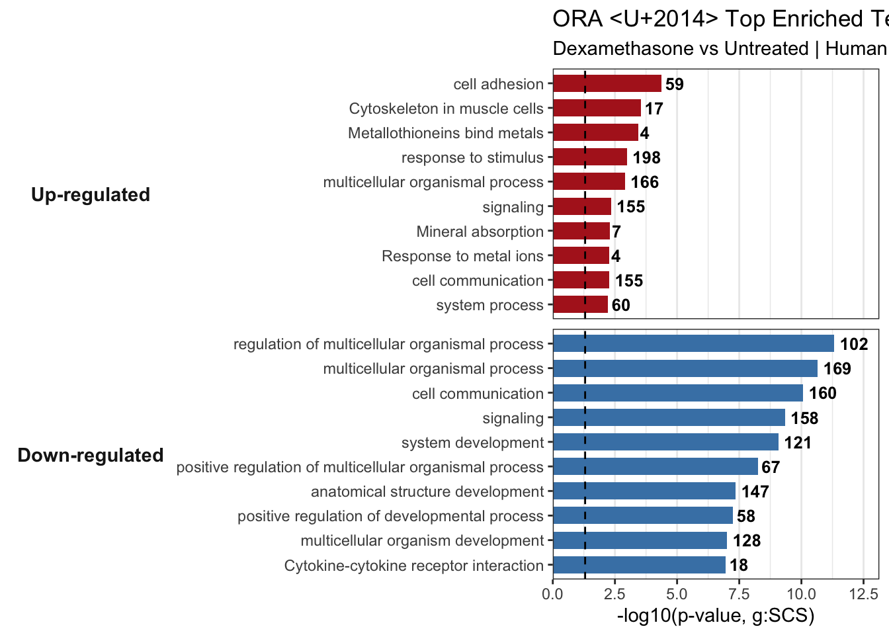

Part 1 — Over-Representation Analysis (ORA) with g:Profiler
What is ORA?
ORA asks: “Are my significant DE genes enriched in any gene set more than expected by chance?”
g:Profiler runs a hypergeometric test for each gene set and applies its own multiple-testing correction (g_SCS by default, which accounts for the overlap structure of GO/pathway terms).
- Query set — significant DE genes (padj < 0.05, |LFC| >= 1), split by direction (up- and down-regulated)
- Background (custom) — all genes tested by DESeq2 (
domain_scope = "custom") - Gene sets — GO Biological Process, KEGG, Reactome
Key assumption: ORA treats all significant genes equally — it ignores the magnitude of fold change. Running ORA separately on up- and down-regulated genes partially addresses this, which is why we split the query set below. For a fully ranked approach, see Part 2 (GSEA).
Prepare Input
We split significant genes by direction. The background is all genes tested by DESeq2, regardless of direction.
sig_up <- res_sig %>% filter(log2FoldChange >= 1) %>% pull(gene)
sig_down <- res_sig %>% filter(log2FoldChange <= -1) %>% pull(gene)
background <- res_df$gene
cat("Up-regulated genes :", length(sig_up), "\n")## Up-regulated genes : 379## Down-regulated genes : 322## Background (all tested) : 14080Tip: Always use all tested genes as the background, not the whole genome.
DESeq2 already filtered to expressed genes, so res_df$gene is the correct pool.
Passing it via custom_bg with domain_scope = “custom” tells g:Profiler
to use exactly this background.
Run ORA
g:Profiler is queried once per direction. The result object’s $result slot is a data frame; we keep the
GO:BP, KEGG and Reactome sources.
Tip: gost() makes a live API call and needs an internet connection.
If you are offline, this chunk will not run.
run_ora_gprofiler <- function(query, background, sources = c("GO:BP", "KEGG", "REAC")) {
if (length(query) == 0) return(NULL)
res <- gost(
query = query,
organism = "hsapiens",
ordered_query = FALSE,
significant = TRUE,
user_threshold = 0.05,
correction_method = "g_SCS",
domain_scope = "custom",
custom_bg = background,
sources = sources,
evcodes = FALSE
)
if (is.null(res)) return(NULL)
res$result
}
ora_up <- run_ora_gprofiler(sig_up, background)
ora_down <- run_ora_gprofiler(sig_down, background)
n_terms <- function(x) if (is.null(x)) 0 else nrow(x)
cat("Up — significant terms:", n_terms(ora_up), "\n")## Up — significant terms: 15## Down — significant terms: 100Note: If a direction returns NULL (no query genes, or no significant
terms), the tables and plots below will simply be empty for that direction. This is a valid outcome,
not an error.
Inspect Significant Terms
Up-regulated genes — enriched terms
if (!is.null(ora_up) && nrow(ora_up) > 0) {
DT::datatable(
ora_up %>%
select(source, term_id, term_name, term_size,
query_size, intersection_size, p_value) %>%
arrange(p_value) %>%
mutate(p_value = signif(p_value, 4)),
rownames = FALSE,
colnames = c("Source", "Term ID", "Term", "Term size",
"Query size", "Hits", "p-value (g:SCS)"),
extensions = c("Buttons", "Scroller"),
options = list(dom = "Bfrtip", buttons = c("copy", "csv"),
scrollX = TRUE, scrollY = 300, scroller = TRUE),
caption = "Significant ORA terms — UP-regulated genes"
)
} else {
cat("No significant enriched terms for up-regulated genes.\n")
}Down-regulated genes — enriched terms
if (!is.null(ora_down) && nrow(ora_down) > 0) {
DT::datatable(
ora_down %>%
select(source, term_id, term_name, term_size,
query_size, intersection_size, p_value) %>%
arrange(p_value) %>%
mutate(p_value = signif(p_value, 4)),
rownames = FALSE,
colnames = c("Source", "Term ID", "Term", "Term size",
"Query size", "Hits", "p-value (g:SCS)"),
extensions = c("Buttons", "Scroller"),
options = list(dom = "Bfrtip", buttons = c("copy", "csv"),
scrollX = TRUE, scrollY = 300, scroller = TRUE),
caption = "Significant ORA terms — DOWN-regulated genes"
)
} else {
cat("No significant enriched terms for down-regulated genes.\n")
}Interactive Manhattan Plot
g:Profiler’s native gostplot() shows all tested terms grouped by source, with significant terms highlighted. We run it once on the combined query for a compact overview.
combined_query <- list(
up = sig_up,
down = sig_down
)
# Drop empty directions to avoid an error
combined_query <- combined_query[lengths(combined_query) > 0]
if (length(combined_query) > 0) {
gost_multi <- gost(
query = combined_query,
organism = "hsapiens",
significant = TRUE,
user_threshold = 0.05,
correction_method = "g_SCS",
domain_scope = "custom",
custom_bg = background,
sources = c("GO:BP", "KEGG", "REAC")
)
if (!is.null(gost_multi)) {
gostplot(gost_multi, capped = TRUE, interactive = TRUE)
}
}Bar Plot — Top Terms by Direction
A static bar plot of the strongest terms in each direction, ranked by -log10(p_value). The number of DE genes hitting each term is printed at the end of each bar.
prep_ora <- function(x, label, n = 10) {
if (is.null(x) || nrow(x) == 0) return(NULL)
x %>%
arrange(p_value) %>%
slice_head(n = n) %>%
transmute(
term_name,
hits = intersection_size,
neglog10p = -log10(p_value),
direction = label
)
}
ora_combined <- bind_rows(
prep_ora(ora_up, "Up-regulated"),
prep_ora(ora_down, "Down-regulated")
)
if (!is.null(ora_combined) && nrow(ora_combined) > 0) {
ora_combined <- ora_combined %>%
mutate(
direction = factor(direction, levels = c("Up-regulated", "Down-regulated")),
term_name = reorder(paste(term_name, direction, sep = "___"), neglog10p)
)
ora_barplot <- ggplot(ora_combined,
aes(x = neglog10p, y = term_name, fill = direction)) +
geom_col(width = 0.7, show.legend = FALSE) +
geom_text(aes(label = hits), hjust = -0.2, size = 3.4, fontface = "bold") +
geom_vline(xintercept = -log10(0.05), linetype = "dashed",
color = "black", linewidth = 0.5) +
facet_grid(direction ~ ., scales = "free_y", space = "free_y", switch = "y") +
scale_y_discrete(labels = function(x) sub("___.*$", "", x)) +
scale_fill_manual(values = c("Up-regulated" = "firebrick",
"Down-regulated" = "steelblue")) +
scale_x_continuous(expand = expansion(mult = c(0, 0.16))) +
theme_bw() +
theme(
strip.background = element_blank(),
strip.placement = "outside",
strip.text.y.left = element_text(angle = 0, face = "bold", size = 11),
panel.grid.major.y = element_blank()
) +
labs(
title = "ORA — Top Enriched Terms by Direction (g:Profiler)",
subtitle = "Dexamethasone vs Untreated | Human ASM",
x = "-log10(p-value, g:SCS)",
y = NULL
)
ora_barplot
} else {
cat("No enriched terms to plot.\n")
}